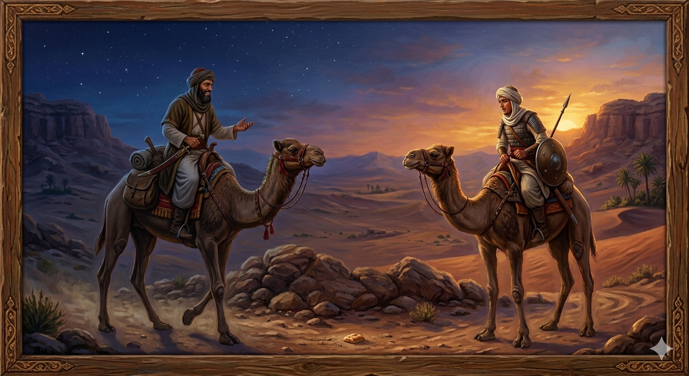

И.А. Дахкильгов. Хьехаме дувцарш - поучительные рассказы-притчи.
И.А. Дахкильгов. Хьехаме дувцарш - поучительные рассказы-притчи. Из ингушского фольклора.

Ялсамала гӀоргва хьо
Мархий бетта пайхамара асхьаб Ӏумар, шийна тӀехьа оздой а болаш, наькъа ваьнна водаш хиннав. Демийла уллаш маькха чӀегалг ейнай цунна. Цхьан эздечунга из хьаэца, аьннад Ӏумар. Сайрийна, нах бахача дӀакхачанза шоаш хиларах, хьаяь из маькха чӀегалг, аьнна хиннад Ӏумара, марха даста дага волаш. Эздечо аьннад: - Бехк ма баккхалахь, марха доаста сахьат тӀаэттача, тӀера из дом дӀа а баьккха, дӀайиар аз маькха чӀегалг. - Хьайна а ца ховш ялсамала гӀоргвалаш саг ва хьо, - вела а венна, аьннад Ӏумара, - Далла аьнна да йоах, маькх яле а, ялата фийг бале а ялатах дола хӀама лаьтта Ӏодежачара хьаийцар ялсамала вохийтаргва аз. Хьалъийцачул тӀехьагӀа из цӀендаьр а ялсамала вохийтаргва. ТӀаккха из дӀайиар вохийтаргва ялсамала, аьннад. Иштта, кхозза хьайна ялсамале яьккхай Ӏа, хӀана аьлча, ялата хьурмат деш вола саг Даллана дукха везаш воландаь.
РУССКИЙ
Ты попадешь в рай
Как-то в месяц уразы ехали сподвижник пророка Мухаммеда по имени Умар и некий его воин. Умар увидел кусок хлеба, лежащий в пыли. Он попросил воина поднять его с земли. Ехали они весь день. Смеркалось, но жилья никакого не было видно. Умар сказал: - Теперь давай съедим этот кусок хлеба. - Не серчай не меня, - повинился воин, - как только смерклось и уже можно было принимать пищу, я очистил этот кусок от пыли и съел его. Рассмеялся Умар и сказал: - Сам не ведая того, ты попадешь в рай, ибо бог Дяла сказал: "Я направлю в рай того, кто поднимет из праха лежащий в нем хлеб или зерно. Кто очистит хлеб от праха, тот тоже попадет в рай. В него попадет и тот, кто съест этот хлеб". Итак, ты трижды удостоился быть в раю, ибо бог Дяла высоко ценит того, кто бережно относится к хлебу.
ENGLISH
НОХЧИЙН
ПОГОВОРКИ